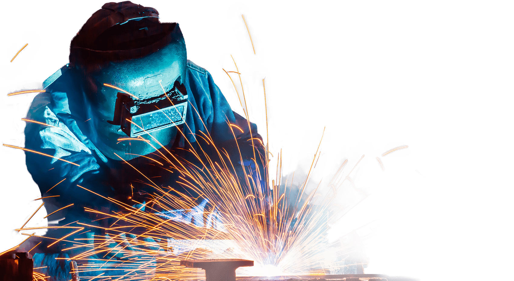

Não é só Metalúrgica
É OXIPRESS!
A Oxipress é uma metalúrgica sediada na cidade de Campinas/SP, com mais de 20 anos de experiência no segmento de corte e conformação de metais. Nosso foco principal atualmente é a fabricação de conjuntos soldados para o segmento de Energia Elétrica. Atuamos também na agroindústria, indústria de mineração, papel e celulose, projetos especiais em elaboração. Destacamo-nos também pela nossa atividade inicial, que é a prestação de serviços de corte em chapas de aço carbono, inox e alumínio, com recurso a máquinas de corte plasma CNC de alta definição.